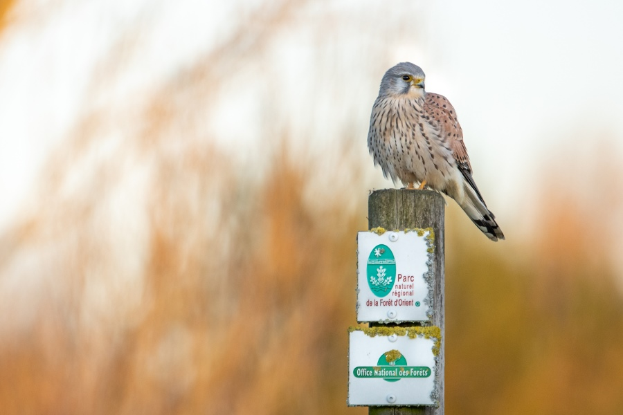

Bienvenue sur l'observatoire du PNR de la Forêt d'Orient
Cet observatoire est complémentaire au site officiel du parc, et a comme rôle d'approfondir et d'ajouter des éléments non-présents sur le site officiel, en se basant sur d'autres sources. Des cartes intéractives, indicateurs et autres informations sont ici compilées pour se faire une idée générale du rôle et du fonctionnement du PNR de la Forêt d'Orient, situé à l'est de Troyes dans l'Aube (10).
Plusieurs catégories sont présentes : la partie Présentation évoque l'évolution du parc et de la signature très récente (24 mars 2025) du nouveau projet de charte.
Les patrimoines naturels et culturels possèdent leur propre partie, alors que l'onglet Aménagements du territoire montre l'impact qu'ont les équipes du PNR sur leur environnement.

Source : https://biodiversite.pnr-foret-orient.fr/atlas/ Crédits : Yohann Berry